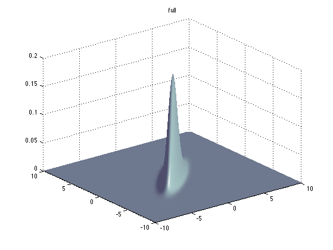
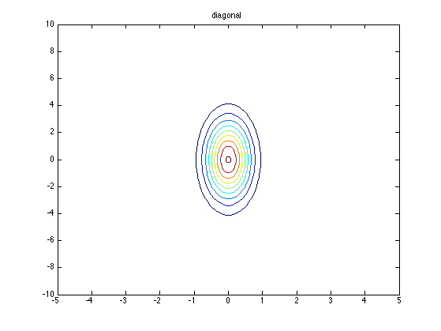
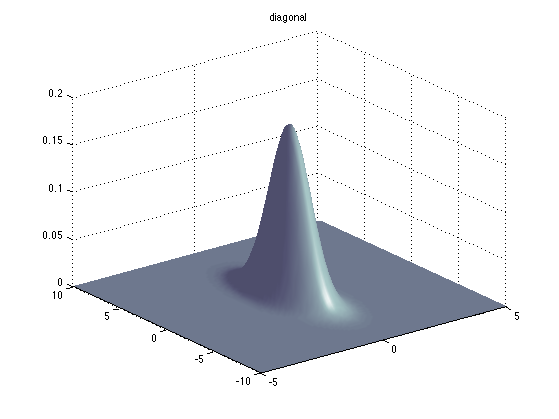
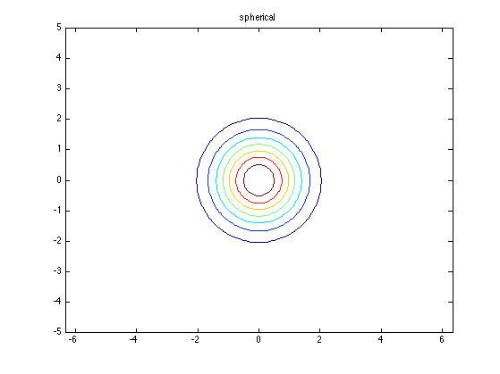
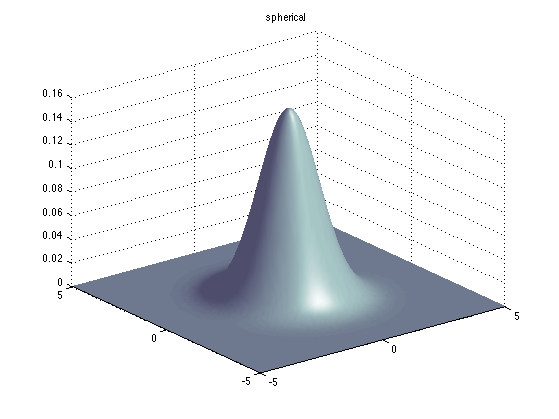

Plot an MVN in 2D
Contents
model = struct('mu', [0 0]', 'Sigma', [2 1.8; 1.8 2]);
figure; plotContour(@(x)gaussProb(x, model.mu, model.Sigma), [-5 5 -10 10]);
title('full');
printPmtkFigure gaussPlot2dDemoContourFull
figure; plotSurface(@(x)gaussProb(x, model.mu, model.Sigma));
title('full');
printPmtkFigure gaussPlot2dDemoSurfFull


Decorrelate
[U, D] = eig(model.Sigma);
S1 = U'*model.Sigma*U;
figure; plotContour(@(x)gaussProb(x, model.mu, S1), [-5 5 -10 10]);
title('diagonal');
printPmtkFigure gaussPlot2dDemoSurfDiag
figure; plotSurface(@(x)gaussProb(x, model.mu, S1), [-5 5 -10 10]);
title('diagonal');
printPmtkFigure gaussPlot2dDemoContourDiag
 
Whiten
A = sqrt(inv(D))*U';
mu2 = A*model.mu;
S2 = A*model.Sigma*A';
assert(approxeq(S2, eye(2)))
S2 = eye(2);
figure; plotContour(@(x)gaussProb(x, model.mu, S2), [-5 5 -5 5]);
title spherical
axis equal
printPmtkFigure gaussPlot2dDemoContourSpherical
figure; plotSurface(@(x)gaussProb(x, model.mu, S2), [-5 5 -5 5]);
title spherical;
printPmtkFigure gaussPlot2dDemoSurfSpherical
 